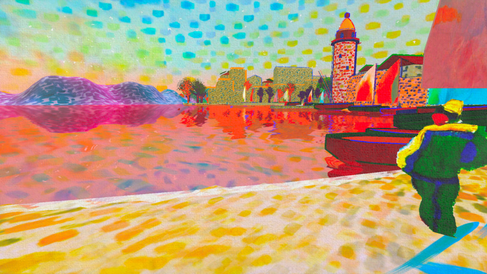

Hacking the
Pipeline
Natalie Cuthbert
The Tyranny
of
Photorealism
Big Graphics is in a race
3d Phsyically Based Rendering
Predominates
Stylisation is a mere afterthought
How do we subsist on the margins?!
What is stylisation?
A departure from reality
Or beyond reality...

What connects them?
Internal Logic
Experiential
Process driven
Material Science
Screens are made up of pixels
(R, G, B)
Rendering engines output pixels
Follow Different Algorithms
Material Abstraction
Defines the look of a surface
Material =
(Assets, Settings, Shader Code)
Problem: Engines make assumptions about shaders
Grounded in real world
Radical Stylisation: Difficult, Lots of Effort
Choose Appropriate Tech
Amplify Shader Editor & Unity Built In Render Pipeline
Godot seems promising
Unreal more opinionated
Unity URP & HDRP moving targets & much more complicated
Experiment with Inappropriate Inputs
Be not afraid
Anatomy Lessons
Recipes
Layering
Color
Space
Screen
World
Model
Chance
Geometry
Texture
Light & Shade
Shaders
Surface
Post Processing
Outlines